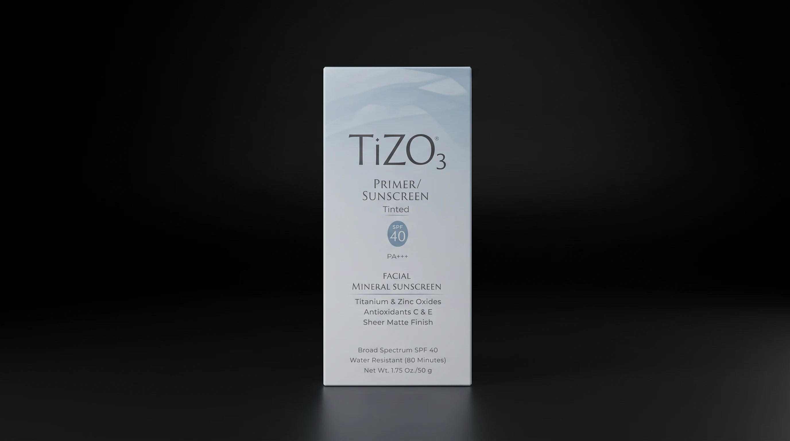
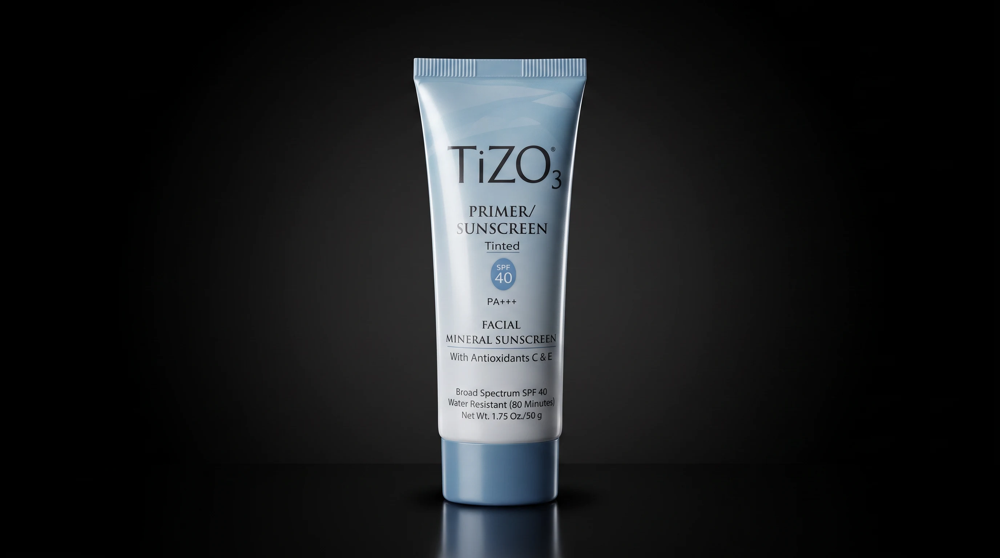
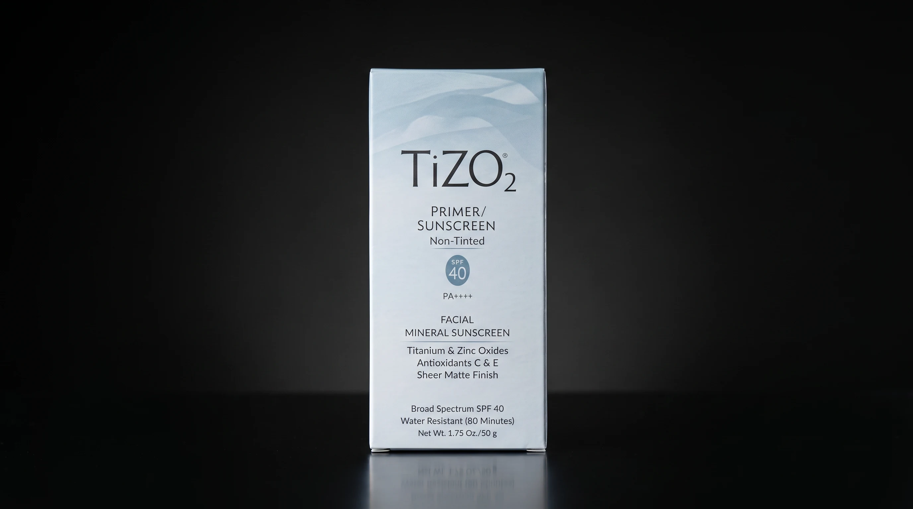
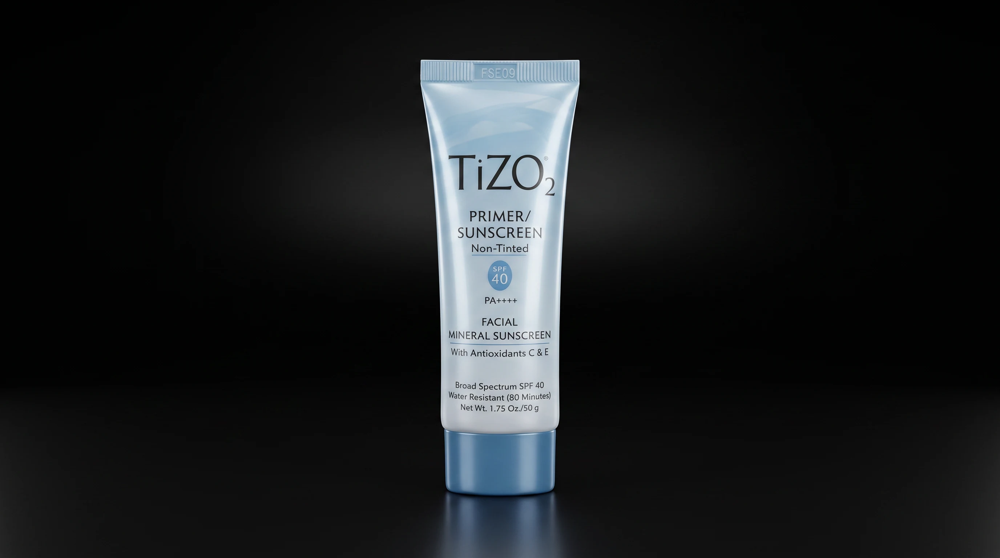

Protector Solar Mineral Facial
TiZO
Titanio & Óxido de Zinc. Antioxidantes C & E.
Un acabado sheer matte que desaparece en la piel.
Para cada tipo de piel, una fórmula que desaparece. TiZO suspende titanio y óxido de zinc en una base ligera, fortalecida con antioxidantes C & E — defensa física que se siente como nada en absoluto.


TiZO3 — Tinted
Primer / Sunscreen
SPF 40 · PA+++ · Amplio Espectro
Un velo de tinte universalmente favorecedor difumina imperfecciones mientras el titanio y el óxido de zinc entregan verdadera protección de amplio espectro. Resistente al agua por 80 minutos — úsalo solo para un acabado sheer matte luminoso, o como primer sedoso bajo maquillaje.
- Amplio Espectro SPF 40, PA+++
- Titanio & Óxido de Zinc
- Antioxidantes C & E
- Resistente al Agua — 80 Minutos
- Acabado Sheer Matte
- Neto 1.75 oz / 50 g
Disponible en nuestra clínica en San Juan — reserva tu unidad con el equipo de Caresthetic.
TiZO2 — Non‑Tinted
Primer / Sunscreen
SPF 40 · PA++++ · Amplio Espectro
La misma defensa mineral incondicional, formulada sin tinte para un acabado puro e invisible bajo cualquier tono de piel. Titanio y óxido de zinc trabajan junto a antioxidantes C y E en un velo suave, libre de brillo, que se siente como nada.
- Amplio Espectro SPF 40, PA++++
- Titanio & Óxido de Zinc
- Antioxidantes C & E
- Resistente al Agua — 80 Minutos
- Acabado Sheer Matte
- Neto 1.75 oz / 50 g
Disponible en nuestra clínica en San Juan — reserva tu unidad con el equipo de Caresthetic.


La Fórmula
Diseñado para Piel al Natural
Protección Mineral
Física, no química — refleja los rayos UV en la superficie de la piel en lugar de absorberlos.
Titanio & Óxido de Zinc
El estándar de oro en defensa mineral de amplio espectro — suave para uso diario durante todo el año.
Antioxidantes C & E
Fortalecido contra agresores ambientales y foto-envejecimiento, con protección que perdura más allá de la aplicación.
Acabado Sheer Matte
Desaparece en la piel sin dejar rastro blanco — un velo suave y libre de brillo, bajo maquillaje o solo.
Resistente al Agua
80 minutos de resistencia al agua y sudor, sin comprometer nunca la sensación en la piel.
Reserva Tu TiZO
Con tinte, o al natural — la protección
nunca cambia.
Reserva tu TiZO3 o TiZO2 para recogerlo en clínica, o pregunta cuál fórmula es ideal para tu piel — nuestro equipo te contactará para confirmar disponibilidad y coordinar el pago.